Tim Agoune
Tim Agoune01Objectif
Repenser les sites de l'entreprise pour améliorer l'expérience utilisateur (UX) : faciliter la navigation d'un article à l'autre, rendre les abonnements plus visibles et mettre en avant la newsletter et les espaces publicitaires.
02Démarche
J'ai commencé par une maquette complète du site vocationsante.fr, réalisée en HTML avec l'appui de Claude Code, puis améliorée pendant plusieurs mois avec mes responsables. La maquette a été validée par mon responsable puis par sa supérieure, et la refonte est en cours d'intégration WordPress par le développeur de l'entreprise. J'ai porté une attention particulière à la structure du site — arborescence, liens entre les pages, hiérarchie des titres — car ce sont des éléments difficiles à corriger une fois le site construit. La méthode se décline désormais sur d'autres sites du groupe : j'ai notamment rédigé le brief de refonte du site de La Médecine du Sport.
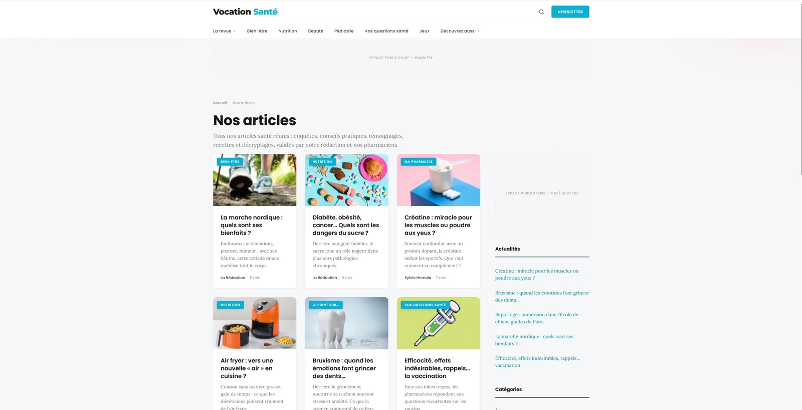
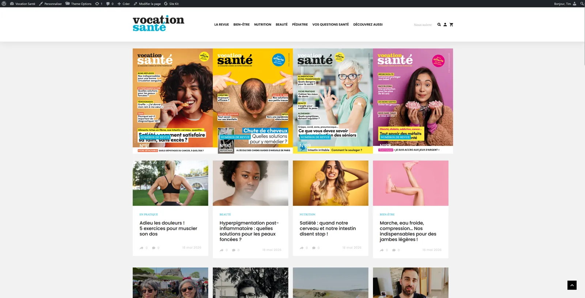
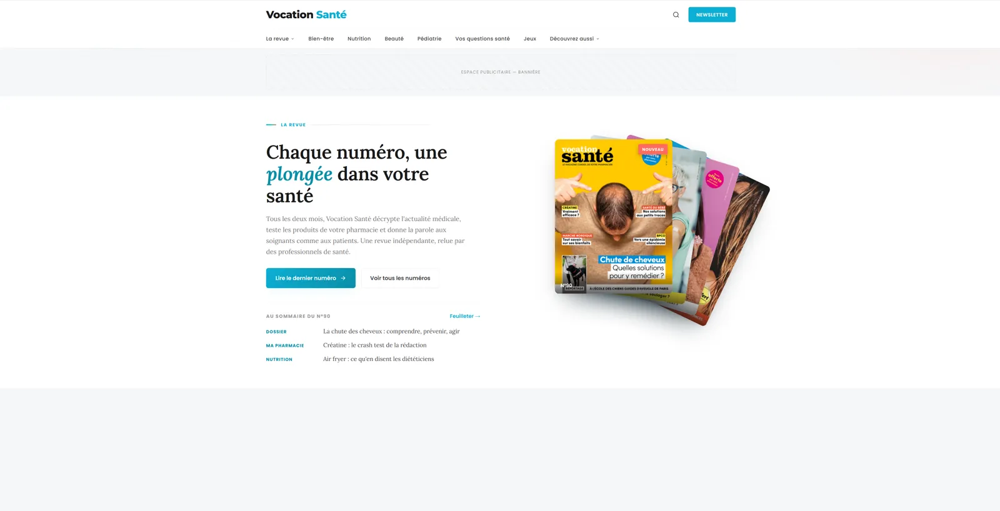
Le même travail a été mené sur les pages d'abonnement des revues professionnelles du groupe. La méthode est toujours la même : un zoning dessiné à la main pour poser la structure, puis la maquette, puis l'intégration. Sur Repères en Gériatrie, les pages d'offres ont été entièrement repensées — cartes comparatives, tarifs mis en avant, parcours par profil (étudiant, médecin, institution).
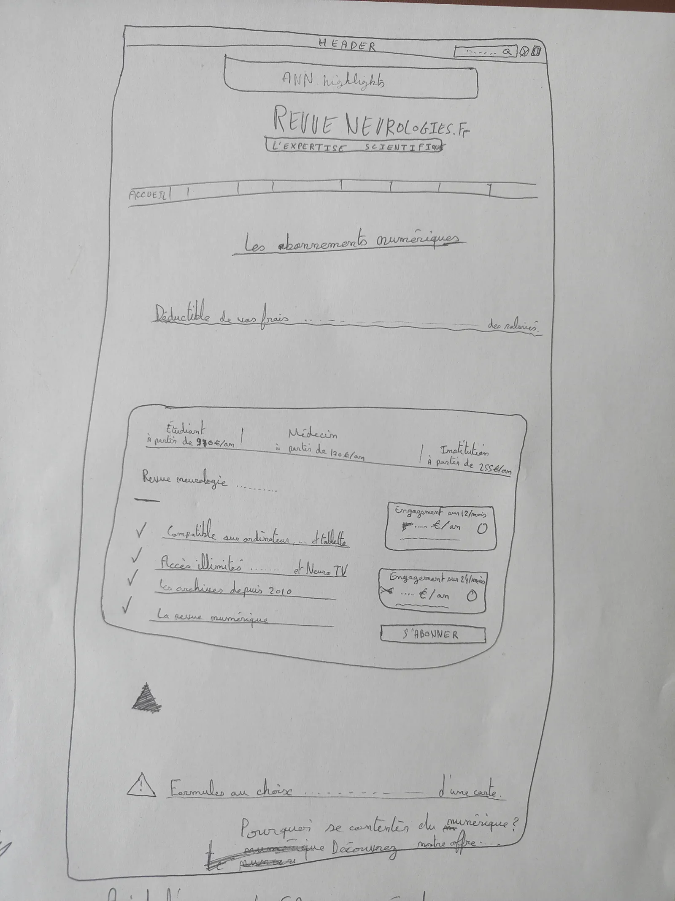
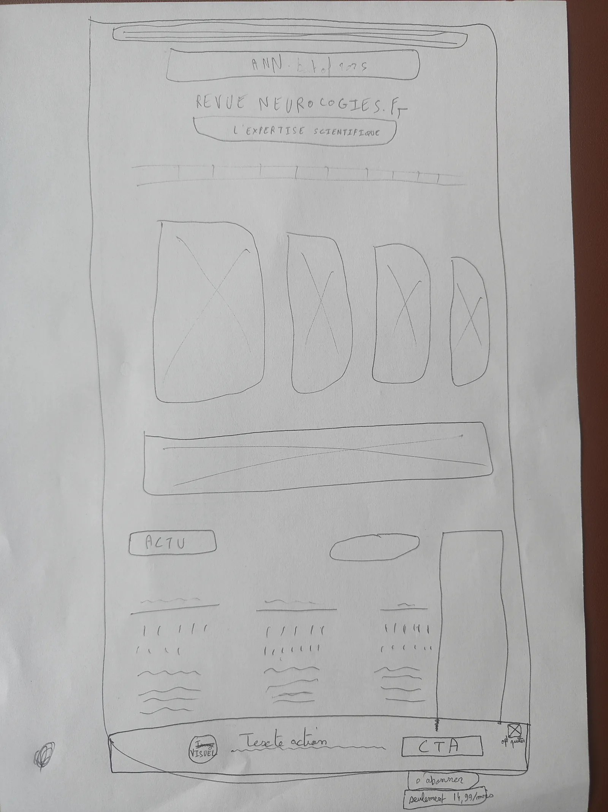
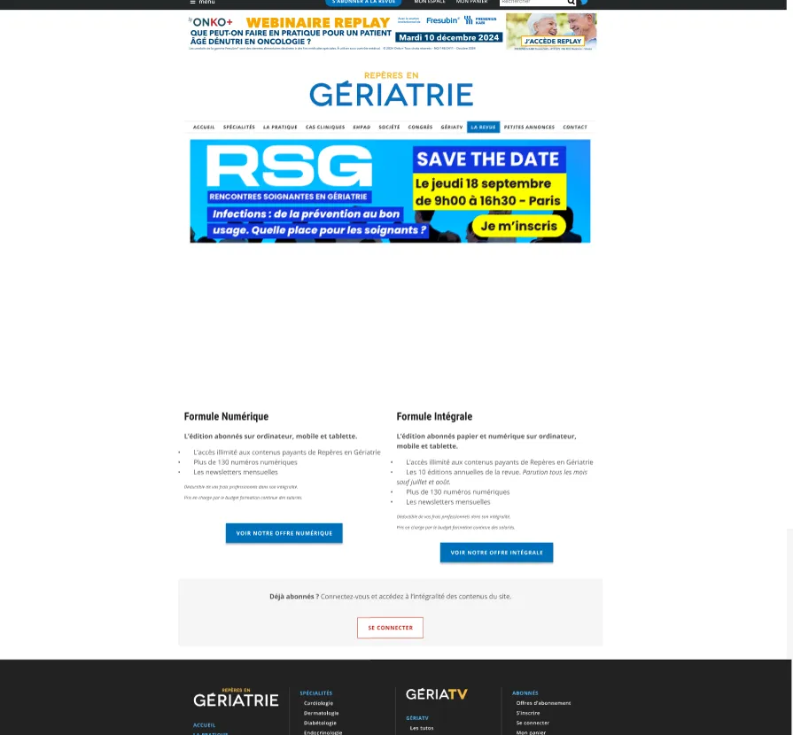
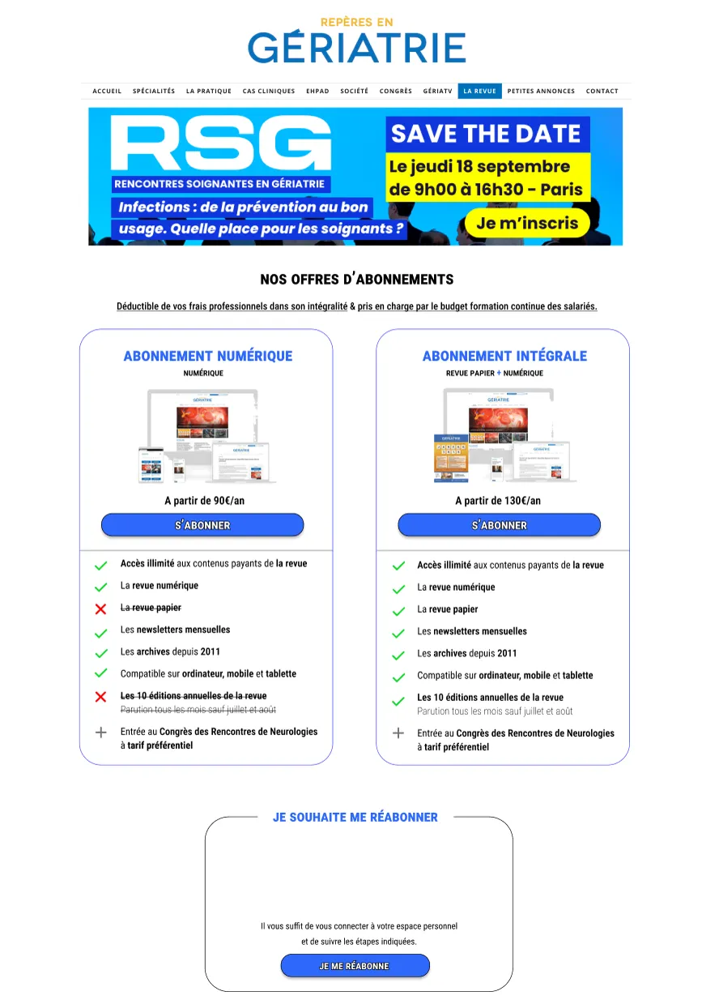
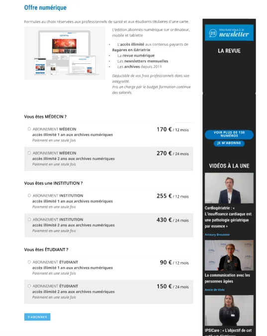
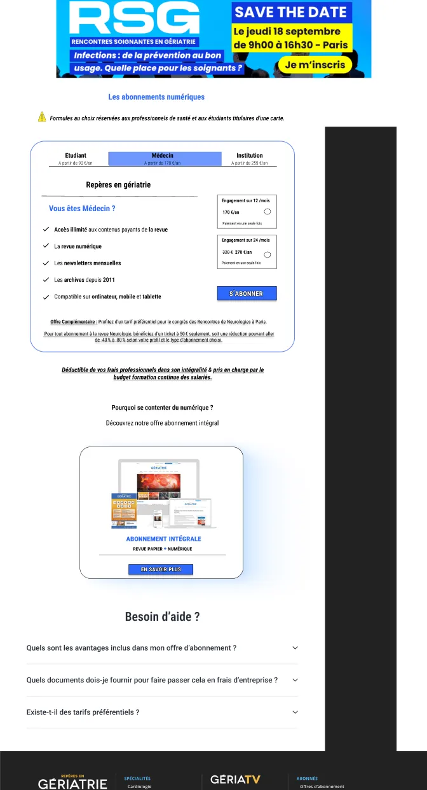
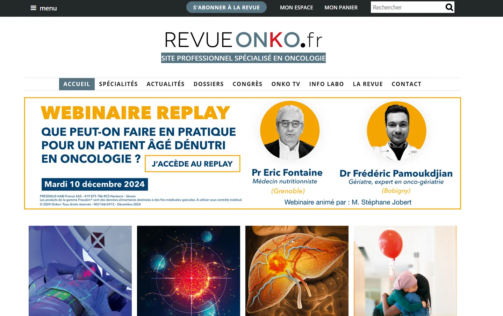
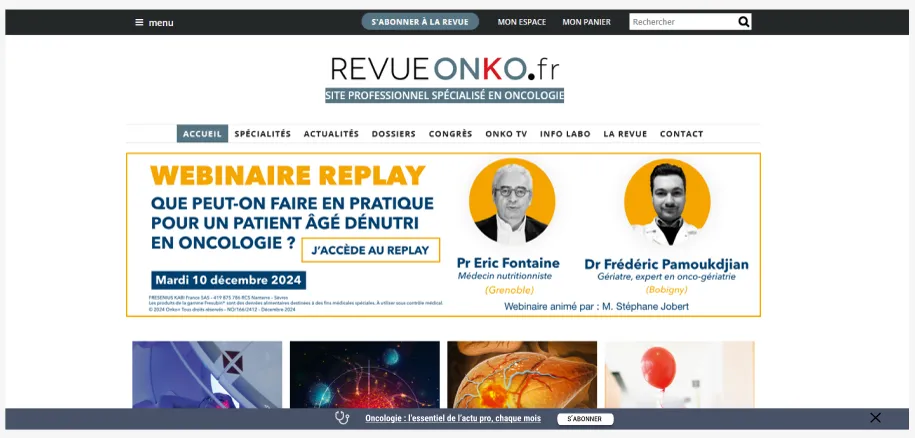
03Moyens et outils
- benchmark de sites de presse (Le Figaro, Télérama) pour m'inspirer des interfaces ;
- zonings à la main pour poser la structure des pages ;
- maquette HTML réalisée avec l'appui de Claude Code.